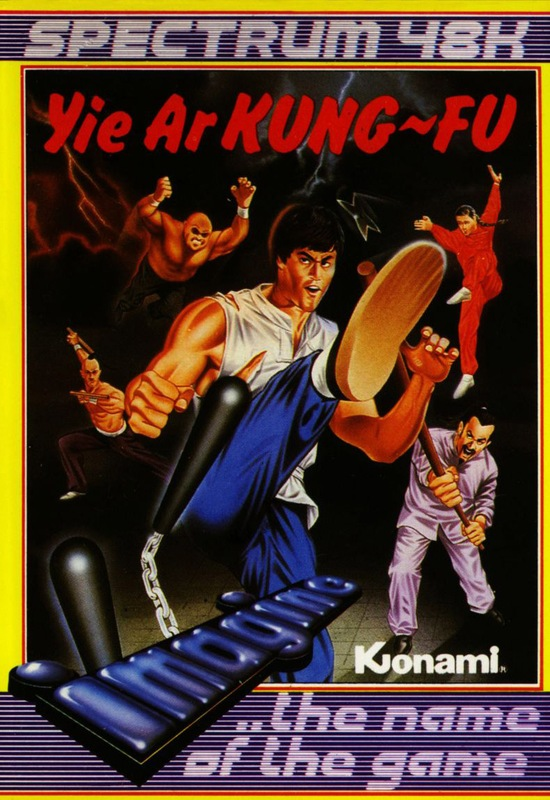
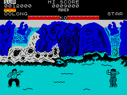
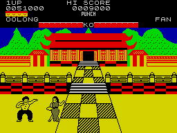

Yie Ar Kung Fu


{kind=link}

| Publisher: | Imagine |
| Price: | £7.95 |
| Year: | 1986 |
| Source: | CRASH, Issue 25 |

The current fad for martial arts games continues with Imagine’s latest arcade conversion Yie Ar Kung Fu. The game has its roots firmly imbedded in the original Japanese Konami arcade game and contains the same opponents and controls, as well as two of the backdrops from the coin-op version.
The game scenario is quite simple and typically Japanese. You take the role of humble Oolong who, for reasons best known to himself, has to follow in the footsteps of his father and honour his family by becoming a Kung Fu Grand Master. To do this he has to defeat the opponents who confront him on his quest. These rather odd-looking adversaries vary from huge jelly like giants who have the ability to fly across the screen at you, to petite females who enjoy trying to kill you by flinging their fans at you.

Oolong, being a dab hand at the Kung Fu routine has sixteen special moves to confound, confuse and generally kill off his opponents with. All these are accessed via the joystick or nine keys, in similar fashion to International Karate. Some of the moves, such as the roundhouse, flying kick and leg sweep, will be familiar to those who already have a martial arts program gracing their software collection. Others, like flying and leaping punches, the stride punch and ground kick are totally new. Points are awarded for well executed moves and a bonus life is given if you manage to reach 20,000 points.
When fighting you have the choice of three different modes: walking mode, punching mode, and kicking mode. You start the game in walking mode and when you’re near enough to your opponent you have the option of being able to either kick or use your fists.

At the start of the game, both you and your opponent are given a certain amount of energy which is shown on-screen in the form of a bar. If you get hit, your bar diminishes slightly. To defeat your opponent you have to make his or her energy bar reach zero before yours does. If you manage to do that then you are promoted to the next, more difficult opponent with your energy level restored to maximum; if you don’t win, then you lose one of your five lives and have to tackle the same opponent again.
Each combatant has a unique way of fighting and you need to modify your fighting strategy in order to win. Some of the opponents carry weapons — poles, throwing stars, shields, swords, sticks and fans which have to be jumped over or ducked under, while avoiding the usual melee of punches and kicks. If you manage to beat the final opponent Oolong becomes a Grand Master, and has to challenge the same set of opponents all over again — only this time they’re meaner and faster.
CRITICISM
‘I found this to be a better game than Way of the Exploding Fist because of its variety. There are nine different opponents and each one is portrayed with very good graphics indeed. The only real disappointment for me is that the level of difficulty is a little low to start with, and it is easy to see all the opponents in the first few goes. To be fair though, the second round proves to be far more difficult and things start to get really hectic. If you didn’t get Fist, and you want a good mince em up, get this. Even if you did, this is well worth considering because of its different approach and the variety of opponents it offers.’
‘Yie Ar Kung Fu is an excellent game and really shows that Imagine are swiftly becoming one of the best software development houses in Britain. It’s easily the best of the Spectrum martial arts programs because of the variety of characters and excellent arcade style playability. The graphics are cleverly designed and avoid attribute problems — something Spectrum owners have had to live with for too long. The only real flaw in the program is that a player can dispose of the first set of opponents very easily: once you’ve beaten them you know what will come next. When compared with Fist at least there is variety. I hope Imagine can continue their high standards — if they do then Ping Pong and Comic Bakery should be programs to await with anticipation.’
‘A great game! The backgrounds are very colourful — it’s just a shame that there are only two of them. The game as a whole is quite a good conversion of the arcade classic, but of course lacks the solid colourful sprites of the arcade machines. The inter-fight jingles are very jolly even if they do seem to get longer when you want to get on with the smashing and bashing. The animation is very good and far more relative to the action than Exploding Fist. The energy bar idea is a great one, and makes the game really nailbiting, especially when you get in a fast and furious scrap with both bars diminishing rapidly. My only complaint is that the game tends to be a bit too easy — even easier than Exploding Fist. I beat everyone on my second go! When you finish, you just go back to fight Buchu, which is a bit of a let down, even if he is a better opponent second time around.’
COMMENTS
| Control keys: | Definable |
| Joystick: | Kempston, Interface 2 |
| Keyboard play: | Responsive, but gets tangled |
| Use of colour: | Excellent, and avoids attributes |
| Graphics: | Large, well animated characters on pretty backdrops |
| Sound: | Jolly jingles |
| Skill levels: | Difficulty increases as you go through the screens |
| Screens: | Nine different opponents |
| General rating: | Another excellent Imagine conversion |
| Use of computer: | 86% |
| Graphics: | 93% |
| Playability: | 89% |
| Getting started: | 85% |
| Addictive qualities: | 93% |
| Value for money: | 88% |
| Overall: | 92% |